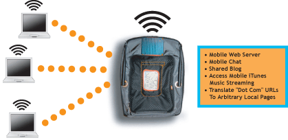

|
This project started as a response to the barrage of announcements about this or that fast food restaurant or public park establishing WiFi services. These announcements were greeted with what seemed to me far too much enthusiasm for an entirely mundane bit of news. While I can appreciate the utility and even necessity of access to email or the web while out and about or eating a burger, the current proliferation of WiFi seems a bit cheap. It seems merely an awkward way to increase foot traffic and sales and not much more. It is an ill-conceived use of a technology that has possibilities beyond access to the web without using wires.
WiFi.Bedouin's "technology aesthetic" is to provide a mode of operation though which it becomes possible to re-imagine the common technical architectures, conceptual idioms, and marketing/advertising representations of WiFi. The project does this most notably with one provocative twist it is an active WiFi Hot Spot, but it is not connected to the Internet. In this way, it is very much like a "network island", severed from the active and inhabited virtual place we call the Internet.
|

|
The design challenge of this project is to create a functioning apparatus that meaningful explores notions of physical proximity, locality, and community in such a way as broaden the range of possible ways wireless networks can construct meaningful and enthralling hybrid physical-virtual space.
The physical, wearable design of the project was inspired by the proliferation of functional-fashionables - designed objects that have utility while they are also suitable for wearing about. I also draw inspiration from a play on the expression mobile internet, often used in marketing evangelicals promoting new portable, mobile devices. My twist on this design is to make what appears to be a local, constrained internet (in that it relies upon the conventional means of access to web-based services the web browser) and make that particular internet mobile.
more
Download the complete project documentation.
Find out about the other project in the Proximity series - WiFi.ArtCache
|
|